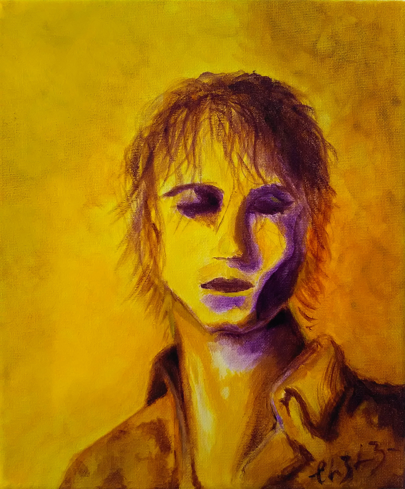
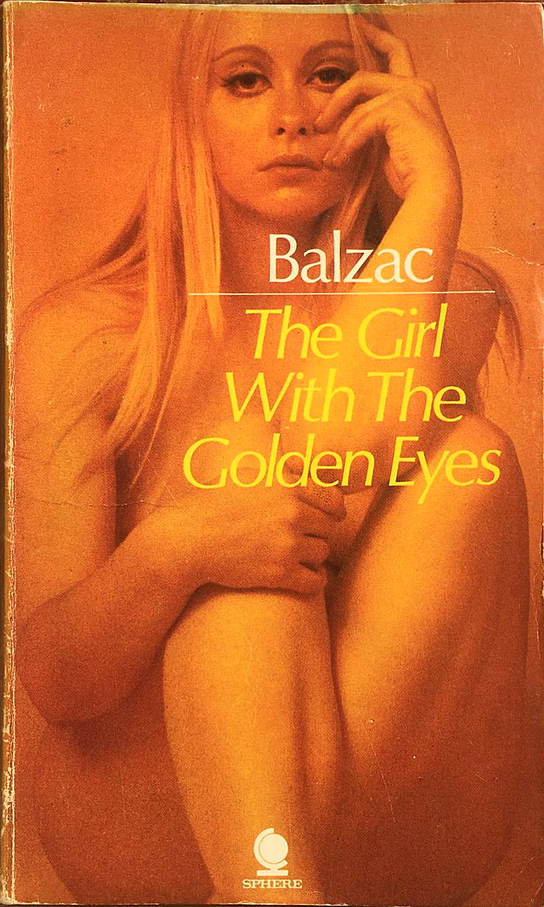

La Fille aux yeux d'or

The lights go back on. The punters shield their eyes, wipe sweat off their foreheads, trickle out, past the cloakroom onto Oxford Street, lighting up, with grins larger than faces.
Tuesday 2nd December 2014, at the 100 Club, London. Iceage have just completed a seering set, whilst touring off the back of their third album. Plowing Into the Field of Love saw the Danish punk band expand, explore, embrace a greater lyrical and musical landscape, delving into instrumentation and lyrical themes only hinted at in the nihilistic You're Nothing, whilst retaining their sharpness, their danger.
The only current punk band I can think of that sounds really dangerous.
- Iggy Pop. Danger evident throughout today's gig. The gaggle who had turned
out this evening were hard to discern, Nick Cave fans, posers, remnants from past
tours, and those who simply wanted to steal a glance of the handsome quartet.
But from the first twang of guitar, it was evident who the bulk of the audience
were. They shoved, dived, shouted back lyrics, with raised fists. They were
here to see the best punk band in punk's own city. And they have. On their way
out, palpable satisfaction hangs in the sweaty air.
The unmistakable hiss of an amp comes back on. Confusion erupts. "Iceage don't do encores?!" But the foursome are back on, and we pile back in. I reach the front, crash onto the stage, thrust by the mob behind. I lie there, staring up, watching from below Elias Rønnenfelt bewitch the ruckus abound. Watching our generation's Elvis, our Bob Dylan, our Ian Curtis.
Raise your fists For the depraved roses Raise it today Everything drifts Soon it's gone Don't find a place to stay
Today, five years on, I am listening to the crooners from the antipodes. The gang of four have swelled and gained a guitarist, and a maraca shaker. The fury of the mosh pit is replaced with luxurious lounge listening. Cowboy tassels, snakeskin boots, 1000-mile stares are being filmed live by a camera crew courtesy of Brodie Sessions, as Iceage saunter through songs inspired by Mina, Pieter Bruegel the Elder, and Samuel Beckett. The spectacle finishes with a rendition of Lockdown Blues, their latest covid-19 inspired single.
Incontent with simply providing a new single, a wondrous livestreamed show, and a vast backlog of influences to uncover, Iceage have also contributed a list of suggested books for reading over this pandemic period: The Bluest Eye by Toni Morrison, Papillon by Henry Charrière, The Happy Birthday of Death by Gregory Corso, God's Mistress by James Galvin, and The Girl with the Golden Eyes by Honoré de Balzac.

I ordered a copy of The Girl with the Golden Eyes; the book's
cover posed even more questions than the title (never mind the blurb:
The greatest French novelist of all time tells the story of a man enslaved
by a strange girl who bewitched him, ignited his passion, taught him all the
ways of love and then revealed herself as captive to the most grotesque
perversion known to human flesh
). Count me in.
Chapter 1, even in translation, unveiled a new realm of linguistic possibilities to me; Balzac's descriptions of Parisian society uprooted my notions of what language is capable of expressing.
Thus we are brought to the third circle of this hell, which, perhaps, will some day find its Dante. In this third social circle, a sort of Parisian belly, in which the interest of the town are digested, and where they are condensed into the form known as business, there moves and agitates, as by some acrid and bitter intestinal process, the crowd of lawyers, doctors, notaries, councillors, business men, bankers, big merchants, speculators and magistrates. Here are to be found even more causes of moral and physical destruction than elsewhere. These people - almost all of them - live in unhealthy offices, in fetid ante-chambers, in little barred dens, and spend their days bowed down beneath the weight of affairs; they rise at dawn to be in time, not to be left behind, to gain all or not to lose, to over-reach a man or his money, to open or wind up some business, to take advantage of some fleeting opportunity, to get a man hanged or set him free. They infect their horses, they over-drive and age and break them, like their own legs, before their time. Time is their tyrant: it fails them, it escapes them; they can neither expand it nor cut it short. What soul can remain great, pure, moral and generous, and, consequently, what face retain its beauty in this depraving practice of a calling which compels one to bear the weight of the public sorrows, to analyse them, to weight them, estimate them, and mark them out by rule? Where do these folk put aside their hearts?
It is a shame that chapter 2 goes on to explore the limits of story telling with wafer-thin characterisation, an incredulous plot, wanton literary and cultural references, and scarcely discernible narration. And an abrupt ending.